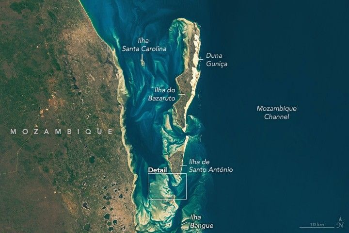

Bazaruto Archipelago National Park
Off the coast of East Africa, the Bazaruto Archipelago extends like a thumb into the western Indian Ocean. The surrounding waters exhibit an array of patterns as currents, waves, and tides have shaped and reshaped the area’s sand flats. The islands and their surrounding waters are part of the 1,430-square-kilometer (550-square-mile) Bazaruto Archipelago National Park.
The archipelago is composed of five islands that lie up to 20 kilometers (12 miles) from mainland Mozambique. The largest, Ilha do Bazaruto, spans about 120 square kilometers (46 square miles), while the smallest, Ilha Bangue, covers just 5 hectares (12 acres). When tides are at their lowest, sand flats extending a kilometer or more from shore become temporarily exposed.
The coasts in this area are mesotidal, meaning that the tidal range is generally between 2 and 4 meters. Some intertidal sandbanks were likely visible on August 3, 2024, when the OLI-2 (Operational Land Imager-2) on Landsat 9 captured this image. Below the water’s surface, areas of sand, seagrass meadows, coral reefs, and other shallow marine areas appear as shades of tan, green, and turquoise; deeper waters are darker blue.
The region’s tides produce strong currents between the islands. These currents redistribute sand, forming deltas and carving deep channels. Sandy features are less visible along the islands’ seaward side, particularly east of Bazaruto, where the water is deeper and waves prevent tidal flats from forming.
A detailed view of water around the southern part of the archipelago shows patches of tan sand and green seagrass. Deeper blue channels cut through the sandy areas. Seagrass beds, visible in these images as green patches, support fish nurseries. The grasses also provide food for dugongs—large herbivores that resemble manatees in their behavior and appearance. The subpopulation found here is the last-known viable group of dugongs along the eastern coast of Africa. Sea turtles, as well as bull sharks and oceanic blacktip sharks, also swim in the archipelago’s waters.
On land, areas of sand, rock, wetlands, and vegetation span the islands. The eastern shore of several islands displays a strip of active sand dunes. Farther inland, vegetation types range from grasslands and thickets to sand-adapted evergreen forests.
Artifacts indicate that people inhabited the islands as early as the Iron Age, about 200-300 C.E. Today, three of the islands have a combined population of about 7,000 people, with many relying on marine resources for subsistence and small-scale commercial fishing.